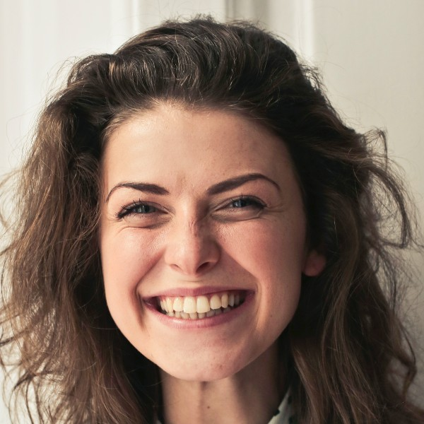
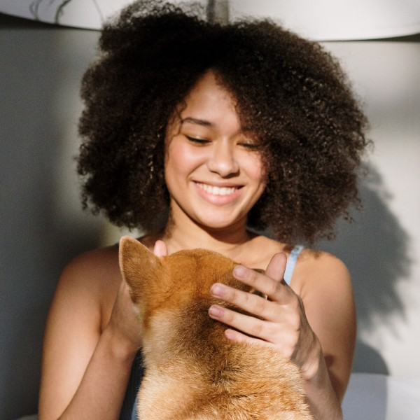

La pose de yoga que más evitas es la que más necesitas.

No hay equilibrio sin amor, ni amor sin equilibrio.

El equilibrio está en tu interior.
La pose de yoga que más evitas es la que más necesitas.
No hay equilibrio sin amor, ni amor sin equilibrio.
 Marcos Díaz
Marcos Díaz
El yoga es para quien desea mejorar como ser humano, para quien desea sentirse bien consigo mismo y encontrar un sentido a su vida.

Julieta Fernandez
La meta principal del yoga es la realización del sí mismo o la elevación del cuerpo y la mente hacia el alma.

Sofía Beruti
Uno de los principios de la meditación y del camino espiritual es que si tú estás en contacto con lo que eres de verdad, estás en paz.
Sebastian Gutierrez
El yoga es la oportunidad perfecta para ser curioso sobre quién eres. Las palabras tienen el poder de destruir y sanar. Cuando las palabras son verdaderas y amables, pueden cambiar el mundo.